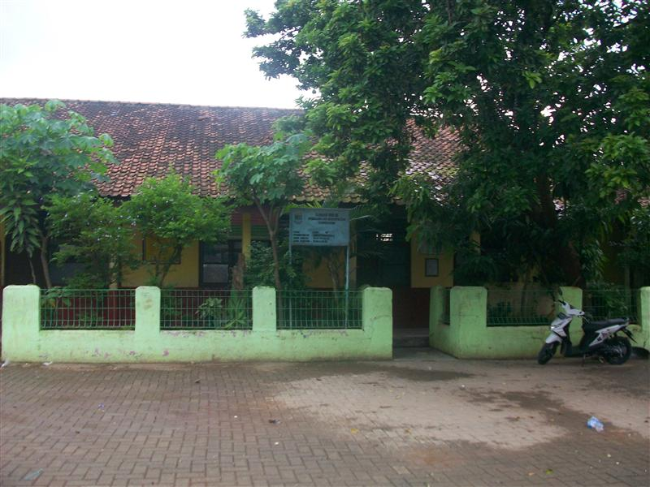

Profil SDN Cikuya 3
Tinjauan faktual satuan pendidikan dasar negeri di Kecamatan Solear, Kabupaten Tangerang berdasarkan data pokok pendidikan dan publikasi ilmiah.

SD Negeri Cikuya III merupakan lembaga pendidikan dasar formal berstatus negeri yang berkedudukan di lingkungan pedesaan Desa Cikuya, Kecamatan Solear, Kabupaten Tangerang, Provinsi Banten. Keberadaannya mengemban mandat konstitusional dalam mencerdaskan kehidupan bangsa melalui penyediaan akses pembelajaran tingkat dasar bagi anak-anak usia sekolah di kawasan sekitar.
Sebagai entitas pendidikan yang berada di bawah naungan regulasi pemerintah daerah dan kementerian terkait, sekolah ini menjalankan kegiatan belajar mengajar berlandaskan kurikulum nasional. Kehadiran sekolah menjadi simpul vital dalam menunjang program wajib belajar pendidikan dasar sembilan tahun di wilayah Solear.
Identitas & Ringkasan Data Pokok
Informasi kelembagaan resmi yang tercatat pada basis data administrasi pendidikan nasional:
Status Akreditasi Lembaga
Peringkat akreditasi ini merupakan hasil penilaian kelayakan program dan satuan pendidikan yang diselenggarakan secara independen oleh Badan Akreditasi Nasional Sekolah/Madrasah (BAN-S/M) berdasarkan pemenuhan 8 Standar Nasional Pendidikan (SNP).
Kembali ke Atas